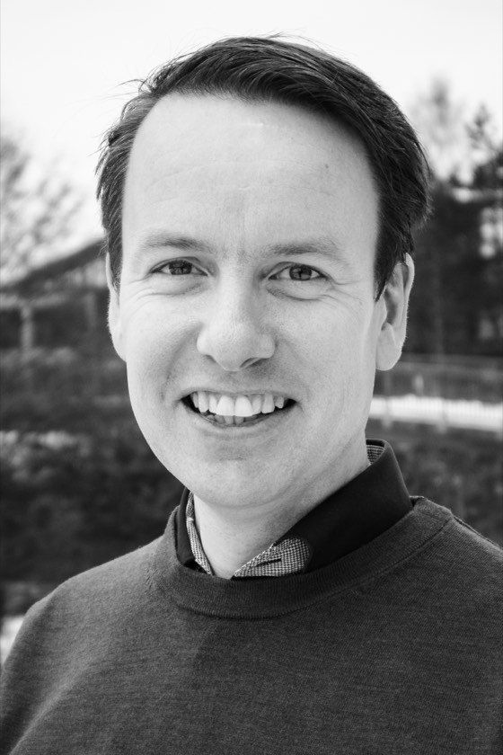

Ingen slides: KI, live
Jeg bygger noe på scenen, med oppgaver publikum roper inn. Et lydopptak blir et ferdig notat, et møte blir en handlingsliste, en idé blir en liten app. Det beste botemiddelet mot både hype og frykt er å se det skje.
~/foredrag
Jeg gjør kunstig intelligens forståelig og konkret. Folk skal gå ut av salen og vite hva de kan prøve på mandag, ikke sitte igjen forvirret eller skremt.
// hvorfor meg
Foredragene mine handler mindre om hva KI kanskje blir en gang, og mer om hva det kan gjøre allerede i dag. Jeg viser løsninger jeg har laget selv og som er i bruk, og jeg forteller ærlig hva som virket og hva som ikke gjorde det. Jeg vet hvordan KI ser ut i en liten norsk bedrift, ikke bare i Silicon Valley.
Dette får dere
// foredragene
Alt kan tilpasses bransjen og publikummet deres. Foredragene varer fra 30 til 60 minutter, verkstedet en halv dag.
Jeg bygger noe på scenen, med oppgaver publikum roper inn. Et lydopptak blir et ferdig notat, et møte blir en handlingsliste, en idé blir en liten app. Det beste botemiddelet mot både hype og frykt er å se det skje.
Mange snakker om KI-reisen, men en reise har en start og en slutt. Det har ikke KI. Om hvorfor så mange KI-satsinger stopper etter piloten, hvorfor det sjelden handler om teknologien, og hva som skjer når lederne lærer det selv. Med Gard som eksempel: et selskap som har gått fra seilskip til damp, diesel og gass, og som tar KI på samme måte, som neste omstilling.
Hvordan en liten gründerbedrift i Agder bruker KI til å koble bønder, hoteller og restauranter, og hva jeg har lært om KI i den virkelige økonomien underveis. For landbruk, matbransjen, reiseliv og alle som lurer på hva KI betyr for dem som lager noe fysisk.
Hva er kunstig intelligens, hva er det ikke, og hvorfor skal du bry deg? Uten fagord og uten skremselsbilder, med eksempler fra hverdagen og jobben til dem som sitter i salen. Passer for alle, enten man aldri har prøvd ChatGPT eller bruker det hver dag.
Deltakerne jobber med sine egne oppgaver, fra første gode spørsmål til egne arbeidsflyter, og går hjem med noe de har laget selv. Kan kombineres med et av foredragene.
// format
// scene
Techpoint, Arendalsuka og Egderøre gjorde jeg mens jeg jobbet i Egde (2020–2026). Homborsund AI er en ideell forening jeg driver ved siden av jobben.
2025–
Medgründer, styreleder og fast konferansier på samlingene, som holdes i en gammel skole uten strøm. Lørdag 3. oktober 2026 holder jeg «No Slides. A Second Brain, Live.»: en talemelding tas opp på scenen, havner i wikien, og så svarer wikien på spørsmål fra salen.
Homborsund AI, ideell forening ved siden av jobben
2024 og 2025
To foredrag om KI-arbeidet i skipsforsikringsselskapet Gard, begge gangene sammen med Gard.
Som rådgiver i Egde, på oppdrag for Gard
Gard og Egde på Techpoint 2024 (video) techpointconference.no
2022 og 2023
I 2023 satt jeg i panelet i GRID-Arendals debatt «AI to Address Climate Change, Biodiversity Loss, and Pollution». Jeg representerte privat sektor og fortalte om arbeidet med GRID-Arendal på verktøy til FNs miljørapport GEO-7. Begge årene var jeg også vert for Egderøres live-podkast foran publikum om bord på skonnerten S/S Solrik.
For Egde
2021–2023
Med på å starte Egdes podkast sammen med Andreas Taraldsen og Magnus Finnset. Det ble 48 episoder om KI, sikkerhet, utvikling og livet som konsulent.
Egdes podkast
// bio
Fri til bruk i program, invitasjoner og presentasjoner.
Øyvind Sandåker er medgründer og KI-sjef i Day of Week og styreleder i den ideelle foreningen Homborsund AI. Han har laget programvare i snart 20 år, og gjør kunstig intelligens forståelig og konkret, med løsninger han har bygget selv.
Øyvind Sandåker gjør kunstig intelligens forståelig og konkret. Han er medgründer og KI-sjef (Chief AI Officer) i Day of Week, et selskap i Agder som bruker KI til å koble lokale matprodusenter med hoteller og restauranter, og styreleder i Homborsund AI. Han har laget programvare i snart 20 år, og de siste årene har han jobbet med KI i praksis for offentlig sektor, helse, forsikring og matbransjen.
Øyvind snakker om det han gjør selv. Han bygger KI-løsninger som er i bruk, viser dem fram live og forteller ærlig hva som virker og hva som ikke gjør det. Foredragene handler mindre om hva KI kanskje blir en gang, og mer om hva det kan gjøre allerede i dag. Publikum går ut med eksempler fra sin egen hverdag, ikke med en klump i magen.
Mens han jobbet i Egde, holdt han foredrag på Techpoint i Kristiansand i 2024 og 2025, begge gangene sammen med Gard, og satt i KI-panel på Arendalsuka. Han var også med på å starte Egdes podkast Egderøre, som ga ut 48 episoder fra 2021 til 2023, flere av dem tatt opp foran publikum på Arendalsuka. I dag er han fast konferansier på samlingene til Homborsund AI.

// booking
Send en e-post med dato, sted, publikum og hva dere vil at folk skal sitte igjen med. Så finner vi formatet sammen.
{kind=link}